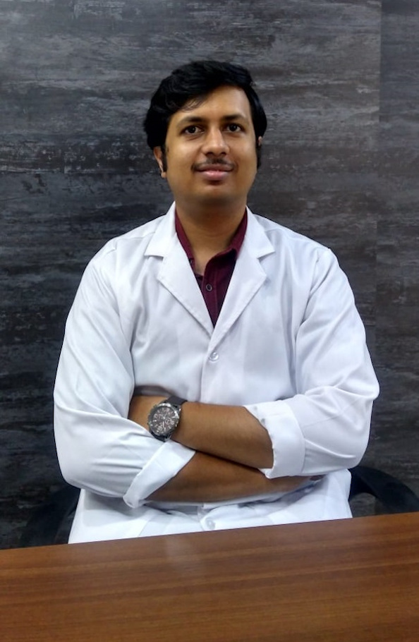

<div class="main-container" [ngClass]="{'makeopaque':apptStatus}">
    <div class="doctors-wrapper">
        <div class="section-heading">
            <p>Meet Our Doctors</p>
        </div>
        <div class="doctor-container doctor1">
            <div class="content content1">
                <p class="name-text">Dr. Remya Warrier</p>
                <p class="credentials">BDS, MDS (Manipal)</p>
                <p class="specialization">Periodontist & Implantologist</p>
                <section class="brief brief-remya">After graduating from Maharashtra University of Health Sciences she
                    has done Post Graduation in Periodontology & Implantology from
                    Manipal College of Dental Sciences.
                </section>
                <section class="brief brief-remya">She is experienced in treating diseases of the gums and in aesthetic
                    procedures for Smile enhancement. She is a certified Implantologist
                    & is well versed with Laser Therapy for aesthetic procedures.
                </section>
            </div>
            <div class="image">
                
            </div>
        </div>
        <div class="doctor-container doctor2">
            <div class="image">
                
            </div>
            <div class="content">
                <p class="name-text">Dr. Adarsh</p>
                <p class="credentials">BDS, MDS</p>
                <p class="specialization">Endotontist & Aesthetic Dentist</p>
                <section class="brief brief-adarsh">He completed his BDS from Sri Ramachandra Dental
                    College, Chennai in 2010 and did his PG in Conservative
                    Dentistry & Endodontics in 2015.
                </section>
                <section class="brief brief-adarsh">He specializes in Painless Single Sitting Root canal treatment. He also
                    has special expertise in Cosmetic Dentistry which includes Smile
                    designing , Veneers, Zirconia Crowns and Bleaching.
                </section>
                <section class="brief brief-adarsh">He is a member of the Indian Dental Association and The Indian Association of
                    Conservative Dentistry & Endodontics.
                </section>
            </div>
        </div>
    </div>
</div>